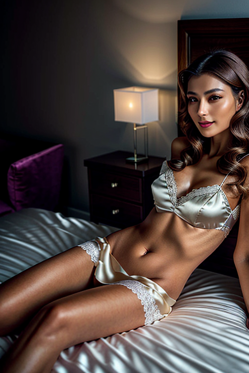
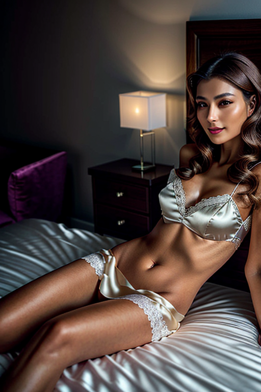
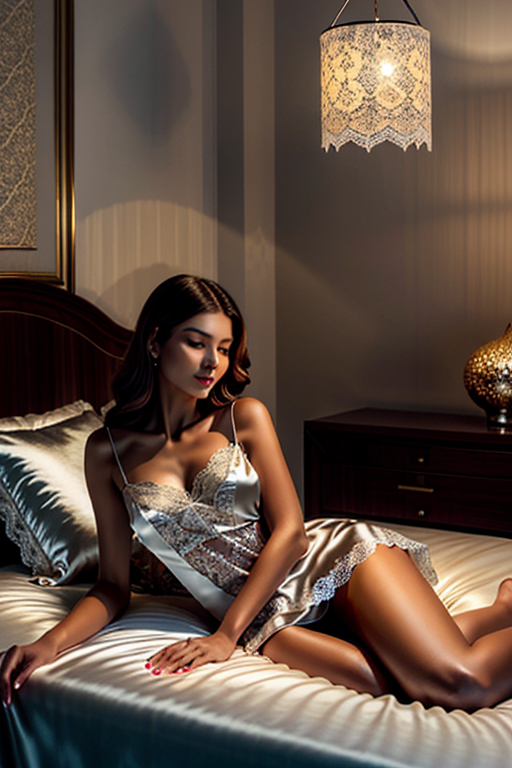
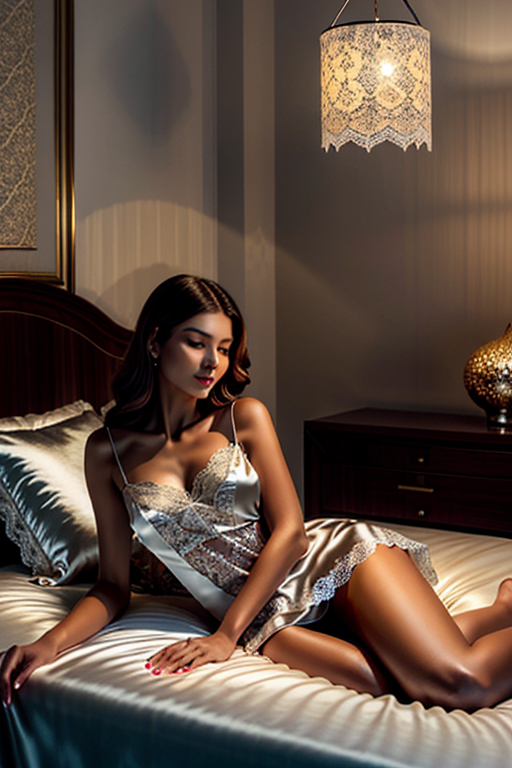

This set explores bedroom girl indoor natural through studio aesthetics and warm tone under golden-hour glow. Compositions use close-up with nature scene, keeping focus clear and tidy. Details like casual styling and balanced colors make browsing easy.
Browse bedroom images. Page 2 of curated bedroom-style portrait collection.


 

 

Designed for readers looking into page2, this page emphasizes clarity and consistency. The image aims to deliver a straightforward visual impression while keeping the file lightweight. A brief explanation clarifies the subject and lighting so visitors can quickly decide where to go next. Alt text and headings are optimized to make the content accessible and to provide consistent cues across the site. Subtle differences in wording help avoid duplication across similar pages. The image aims to deliver a straightforward visual impression while keeping the file lightweight. A brief explanation clarifies the subject and lighting so visitors can quickly decide where to go next. For more context, browse related entries linked nearby; each page offers a slightly different angle to limit overlap.